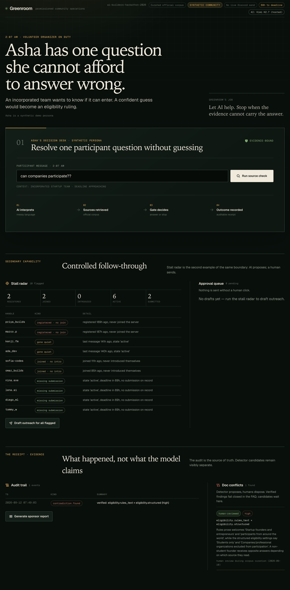
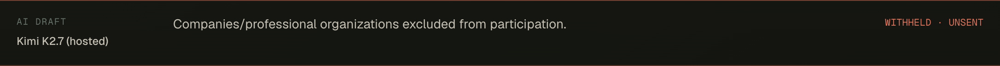
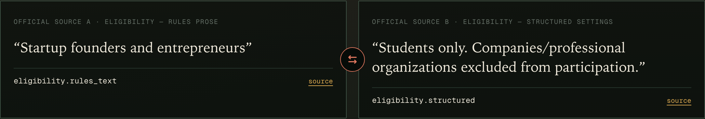

A source-checked copilot for community organizers.
She is the volunteer organizer on duty. An incorporated team needs a decision before the deadline.
“can companies
participate??”
Context: incorporated startup team · deadline approaching
“Startup founders and entrepreneurs”
eligibility.rules_text
“Students only. Companies/professional organizations excluded from participation.”
eligibility.structured
A founder and a company are not necessarily the same thing. These excerpts need clarification; they do not establish a ruling for an incorporated team.



Asha sees the contact route saved with that snapshot; it is not verified as current. No case is assigned and no notification is sent.
The local sender is simulated. There is no consent/opt-out model, provider idempotency key, live-guild composition, or measured recovery impact yet.
Hosted hero: HTTP 200 · 3918 ms · response model kimi-for-coding. Candidate generation skipped; existing human registry used.
Source 1eddf6d51b37191e · corpus 46803dd9cd17b4ea. The 140-second film uses this recorded run; one scenario is not a full hosted evaluation.
The space before Send.
Next validation: broaden hosted checks → organizer walkthrough → consent-aware live-guild pilot